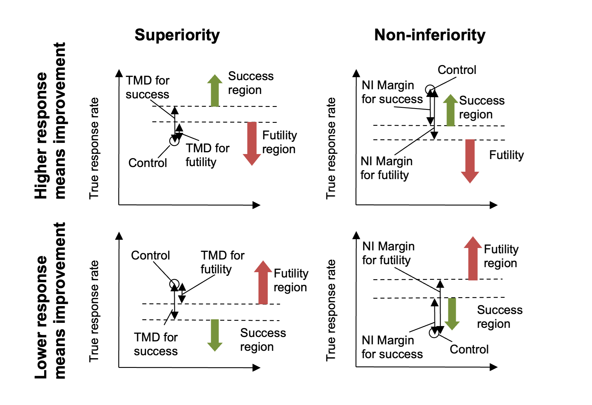

The Study tab
Study Info
The Study Info sub-tab provides parameters for specifying:
Study Information, selecting: whether there are control arms in each group as well as a treatment arm or only a treatment arm, whether an event represents patient improvement or deterioration, whether the trial is attempting to show the treatment’s superiority over the control, or its non-inferiority to it, and the length of time subjects are to be followed.
Design Options, selecting: whether the design is adaptive and there are to be interims where the trial can be modified or not, and whether the design will look at subject’s longitudinal results at interim visits before their final visit.
Groups, defining the different groups to be studied.
In ‘Study Information’ the following is specified:
Whether there are control arms in each group as well as a treatment arm or only a treatment arm (the analysis is to “Compare to an objective control”).
If control arms are included the analysis will be by the comparison of the results of the subjects on the treatment arm with that of the subjects on the control arm.
If an objective control is used, there will be no control arm in the trial and the analysis will be by the comparison of the results of the subjects on the treatment arm with an assumed ‘historic’ or ‘objective’ control response.
Whether an event is subject improvement or subject deterioration. This determines the direction of the comparisons performed when making decisions about the trial’s success or futility.
If an event indicates success (subject improvement), then success criteria will estimate the probability that the hazard ratio of the treatment arm to the control arm (or of a specified event rate based on historical data) is greater than 1 by some Target Hazard Ratio Difference for Success (THRDS) (also called the Clinically Significant Difference (CSD)). Futility criteria will estimate the probability that the hazard ratio of the treatment arm to the control is greater than 1 by more than the Target Hazard Ratio Difference for Futility (THRDF).
If an event indicates failure (subject condition worsening), then success criteria will estimate the probability that the hazard ratio of the treatment arm to the control arm (or of a specified event rate based on historical data) to be less than 1 by some Target Hazard Ratio Difference for Success (TRDS). Futility criteria will estimate the probability that the hazard ratio of the treatment arm to the control is less than 1, by the Target Hazard Ratio Difference for Futility (THRDF).
See Section 1.2 for more information.
Whether the aim of the study is to determine superiority or non-inferiority. If non-inferiority is specified, then on other tabs, instead of specifying a clinically significant difference (CSD), a non-inferiority margin is specified. Whereas in a superiority trial the target is to be ‘better’ than control by the specified margin, in a non-inferiority trial the target is to be not worse than control by the specified margin.
The limit on subject follow up, this can be either:
The maximum follow-up time, no subject will be followed for longer than this. If the study does not stop early it will stop when every subject recruited has reached their maximum follow-up time or has had an event.
The follow-up time after full enrolment. If the study does not stop early then it will stop the specified time after full enrolment or when every subject has had an event.
Note that as a result of being able to specify whether a higher or lower event rate represents improvement, and whether the aim is superiority or non-inferiority, the CSD or the Margin will almost always be a positive value. The user may specify clinically significant differences, the engine will automatically determine which direction is appropriate (e.g. if lower values are subject improvement, the engine will realize a THRD of 0.3 for success corresponds to a hazard ratio of 0.7”)
In ‘Design Options’ the following is specified, where the simpler options are taken, this allows the GUI to reduce the number of options presented to the user.
Specify an Adaptive or Non-Adaptive design. If ‘Enable adaptive features’ is selected the ’Design > Interims’ and ’Design Success/Futility Criteria > Interims tabs are now visible having not been required for non-adaptive designs.
Figure 2: Defining Groups.
Groups:
Groups can be added and deleted (clicking ‘Delete’ deletes the currently selected group).
Groups can be named and it is possible to specify whether there is a ‘cap’ on the number of subjects that can be recruited into that group, if so then the maximum ‘Group size’ must be specified.
If any groups do not have an individual group cap, then an overall cap (max sample size) must be specified. If all groups have a cap it is still possible to specify an overall cap (which to have any meaning, must be less than the sum of the individual group caps).
Group Info
On this tab values to define the analysis for each group are specified.
In a trial to show superiority, for each group the Target Clinically Significant Difference can be set. Optionally the parameters for a phase 3 may be specified to allow the predictive probability of subsequent success in such a phase 3 trial to be used as decision criteria.
With a time-to-event endpoint the Clinically Significant Difference is in terms of Target Hazard Ratio Difference – that is a difference from 1 in the ratio of the hazard rate in the treatment arm and the hazard rate in the control arm. Separate differences can be set for determining success and futility, and separate differences can be set for each group and for the across groups analysis. Their use in practice is specified on the “Design > Stopping Criteria” and “Design > Evaluation Criteria” tabs.
The phase 3 success criteria are:
Phase 3 total number of subjects per arm
The required one-sided alpha
Whether the phase 3 is to use a test for superiority or non-inferiority (set independently from whether the ED trial is for superiority or non-inferiority)
A super-superiority margin / non-inferiority margin (depending on whether the phase 3 trial is for superiority or non-inferiority), this margin is independent from any margins specified for the ED trial.
Given these criteria FACTS calculates the predicted probability of success in the subsequent phase 3, given the estimate of the hazard ratio integrated over the uncertainty in that estimate. The conventional expected power of the specified phase 3 is calculated for the treatment effect in each MCMC sample and then averaged. The resulting predicted probability of success in phase 3 can then be used in the stopping criteria and final evaluation criteria.
Separate ‘Target Hazard Ratio Differences’ can be set for success and for futility, specifying the THRD for success and THRD for futility. We use the terms Target Hazard Rate Difference here as it makes it clearer that the value to be entered should be positive. Elsewhere (in column headings for instance) the more conventional term CSD may be used.
If used to decide to stop a group for success or judge whether the group was successful in the final evaluation, the criteria will test whether \(PR(1 - HR > CSHRD\ for\ success) > Success\ threshold\ \).
That is, whether the posterior probability that the hazard ratio is less than one by more than the target hazard ratio difference is greater than a specified threshold (which is set on the Design tabs).
If used to decide to stop a group for futility or judge whether the group was futile in the final evaluation, the criteria will test whether \(\Pr(1 - HR > CSHRD\ for\ futility) < Futility\ threshold\)
That is, whether he posterior probability that the hazard ratio is less than one by more than the target hazard ratio difference for futility is less than a specified threshold (which is set on the Design tabs).
If the endpoint is such that an event means subject improvement, then the comparison is reversed (the treatment difference becomes \(HR - 1\) and if the trial is non-inferiority then the test for “being greater than the CSD” is replaced with testing for “being less than the NIM” (Non-Inferiority Margin). Thus the meaning of the user specified Difference or Margin is interpreted taking into account both whether a response means ‘better’ or ‘worse’ and whether the trial aim is ‘superiority’ or ‘non-inferiority’. The result is that for normal usage the value entered will be +ve, as the following diagrams should make clear:
Figure 4
Note that in Superiority trials the required THRD for success will be greater than or equal to the THRD for futility, whereas in the Non-Inferiority trials the required NIM for futility will be greater than or equal to the NIM for success.
Notes on setting Target Hazard Ratio Differences
Target Hazard Ratio Differences (THRD) are also referred to as Clinically Significant Differences (CSD). A “standard” hypothesis test for demonstrating superiority to control uses a CSD of 0. Testing with a non-zero CSD is different, and the implications need to be carefully understood.
The first mistake to avoid is setting the target hazard ratio difference for success too large. The decisions for success are in terms of the estimated posterior probability that the difference of the hazard ratio from 1 is greater than the target. If the CSD is set to what might be the treatment difference in the “alternate hypothesis” of a standard hypothesis test, we could only expect on average to have a posterior probability that the treatment difference is greater than the CSD of 50%.
To achieve posterior probabilities of > 50%, the observed difference must be greater than the target difference. To achieve the desired power by lowering the required posterior probability would be a mistake, as posterior probability thresholds of < 50% have the undesirable characteristic that the criteria can be met in circumstances where it can be seen that if further data was gathered consistent with what had been seen already, it would lead the threshold no longer being met. The posterior distribution would shrink so that there was no longer sufficient of the tail above the CSD.
It is better therefore to use a target hazard ratio difference for success that, should the treatment have the value that it is hoped to achieve, we would expect to see some >50% probability of being greater than it. Thus rather than using what might be termed ‘the target value’ for the THRDS, it is better to use ‘the minimum acceptable value’.
The same target difference can be used to decide futility, requiring a << 50% confidence that the difference of the hazard ratio from 1 is greater than the target difference. However, particularly if there are other endpoints not being explored in the simulation, or other properties of the treatment (such as convenience, compliance, cost, tolerability etc.) that might justify continued development even if it is not an outright winner on the primary endpoint, it may be that a lower target hazard ration difference needs to be set as the threshold for determining futility – for example sufficient to demonstrate that development even on the basis of non-inferiority on the primary endpoint is likely to fail. Hence FACTS allows separate CSDs to be set for assessing success and futility.
Non-inferiority
In a trial to show non-inferiority, the tab is the same except that ‘Target Hazard Ratio Differences’ are now ‘Margin deltas’ to be set.

Visits
If events are observed at any time that they occur during follow up, then there is no need to specify a visit schedule, the length of follow up will be as it has been specified on the Study > Study Info tab (above), leave the “Events Are Only Observed at Visits” check box unchecked:
If observation of event is to be only at visits, the visit schedule needs to be specified. There is an additional observation at the end of follow-up. Visits can be specified one at a time, by entering the required week value for the visit and then clicking ‘Add’, or by specifying a regularly spaced sequence: select ‘Auto-Generate’, enter the number of visits, the week of the first visit and the number of weeks between each visit and then click ‘Generate’.
Individual visits can be deleted by selecting them in the list and clicking ‘Delete’. The default visit names can be edited by clicking the visit name and typing. The week and the index cannot be changed. Should it be necessary to change the week of a visit, the incorrect visit must be deleted and a new one with the correct week number added.
Variants
On this tab the user can specify that a number of design variants should be created. Currently the only design feature that can be changed is the sample size (maximum number of subjects).
If “multiple variants” is checked then the user can specify that simulations setups should be created for each simulation scenario with versions of the design with a different maximum number of subjects.
The user enters the number of variants they wish to create. Then in the resulting table, enter different maximum subjects for each group that has had a cap specified on the Study > Study Info tab and maximum “Total Subjects” for each variant. On the simulations tab FACTS will then create a copy of all the scenarios to run with each variant.
In FACTS Enrichment Designs, as well as trial Success and Failure rates, a major Operating Characteristic that we often wish to estimate is the ability of the design (if the trial is successful) to select the ‘right’ groups, depending of course on the scenario being simulated. To enable FACTS to report this the user must specify on the Virtual Subject Response > Explicitly Defined > Group Response profiles which of the groups “Should succeed”, that is, it would constitute a ‘correct selection’ by the design in that scenario.